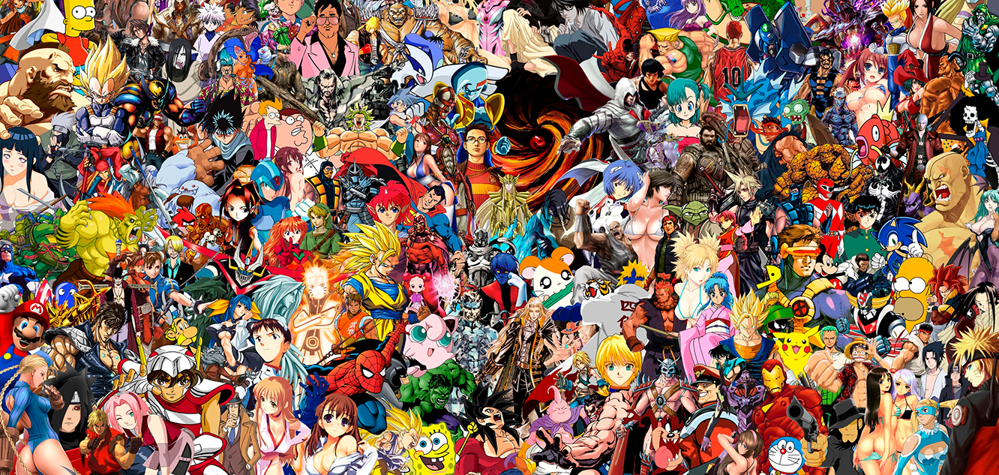
10 ЛУЧШИХ АНИМАЦИОННЫХ СТУДИЙ МИРА
Когда речь идет об анимации, что вы представляете? Ваша мама, наверное, вспомнит длинные очереди в кинотеатры, когда показывали новую серию «Ну, погоди!». Вы подумаете о таком шедевре, как «Король Лев», а если мы ошибаемся, то о мультсериале «Симпсоны». Дети расскажут о «Смешариках», приключениях «Маши и медведя» или Лунтике. Попробуйте поговорить на эту тему с жителями разных стран и ваше представление об анимации значительно преобразится.
В ходе своего развития анимация претерпела существенные изменения. Одно осталось непоколебимым – любовь зрителя. Мультфильмы неизменно ассоциируются с детством, словами «Мам, ну включи мультик», задорным смехом, безграничной верой в добро и лучшее, что есть в человеке. Именно потому мы решили рассказать о тех студиях, которые проделывают громадную работу, чтобы подарить нам удивительные мгновения наедине с волшебными рисованными мирами.
1. «Союзмультфильм»
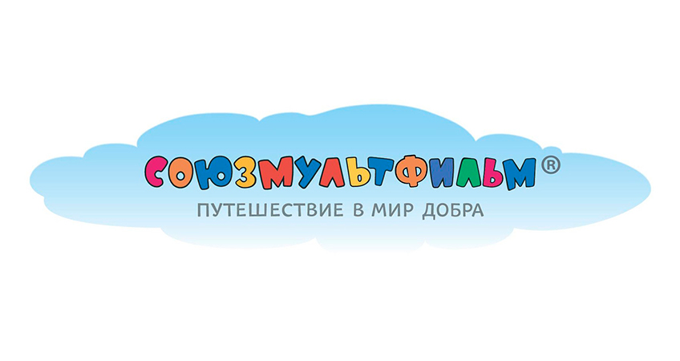
Да, мы начнем с крупнейшей анимационной студии СССР, которая была основана в 1936 году под названием «Союздетмульфильм», всего на 2 года позже Walt Disney. Первой работой студии стал черно-белый мультфильм «В Африке жарко», выпущенный в 1937 году. С течением времени «Союзмультфильм» (а именно такое название студия получила после переименования) освоил цветные и кукольные картины. История студии была достаточно непростой, с судебными тяжбами и бесконечными спорами, однако ее наследие бесценно.
Среди наиболее популярных работ студии «Союзмультфильм»: «Конек-Горбунок», «Аленький цветочек», «Двенадцать месяцев», «Винни Пух», «Крокодил Гена», «Жил-был пес» и многие другие. И, конечно, не стоит забывать о работе Юрия Норштейна «Ежик в тумане», которая получила более 35 международных премий, а в 2003 году была признана лучшим мультфильмом всех времени и народов.
2. Walt Disney Animation Studios
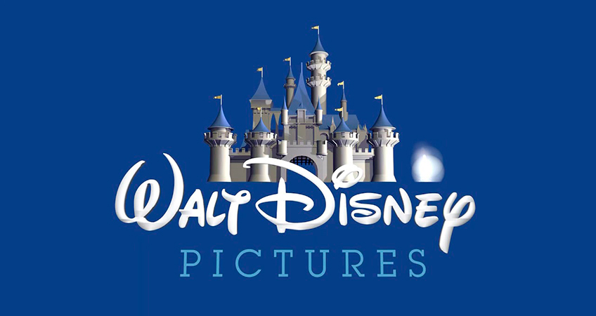
Walt Disney Animation Studious была основана в 1934 году и ее первой работой стал мультфильм «Белоснежка». «Невероятно, – подумаете вы, – пока другие осваивали черно-белое производство, здесь царили краски». Именно Walt Disney Animation Studious стала первопроходцем в использовании технологии «Technicolor» и это далеко не последнее достижение компании. В 1986 году студия стала частью огромной корпорации The Walt Disney Company.
Работа с многоплановой камерой, внедрение ксерокопирования, цифровые технологии – Walt Disney Animation Studious удалось обогнать всех конкурентов. Что и говорить, если «Красавица и чудовище» стала первой анимационной лентой, номинированной на «Лучший фильм года», а «Король Лев» до сих пор удерживает первенство как наиболее кассовый рисованный мультипликационный фильм. Вы тоже плакали, когда его смотрели?
3. Warner Bros. Cartoons
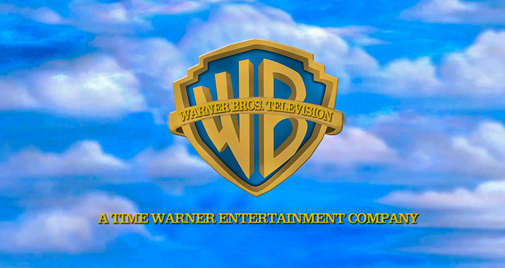
Говоря о Warner Bros. Cartoons, невозможно обойти стороной Looney Tunes, потому что именно этот анимационный сериал не только стал пародией на творения Walt Disney, но и подарил Багза Банни, Даффи Дака, Уилл И. Койта, канарейку Твитти и не только. Удивительные, веселые и порой раздражающие персонажи были созданы талантливым Леоном Шлезингером в 1930 году.
А в целом история Warner Bros. Cartoons началась с мультсериала «Веселые мелодии» (Merrie Melodies). Серия под названием It’s Got Me Again! впервые была номинирована на Оскар как «Лучший анимационный фильм». Looney Tunes, как и Merrie Melodies транслировались до 1969 года. В 1980 году Warner Bros. Animation стала приемником Warner Bros. Cartoons и подарила нам неугомонные «Приключения Тома и Джерри» (2006 год).
4. Pixar Animation Studios
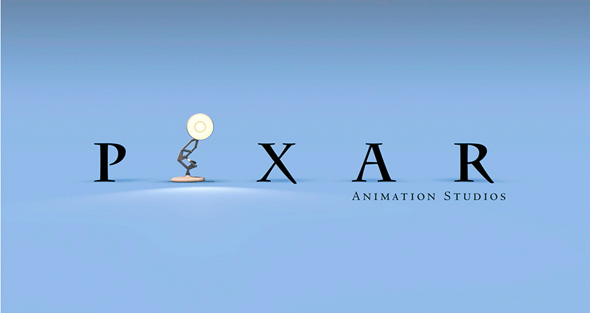
Студия PIXAR основана в 1979 году Джорджем Лукасом как часть его корпорации. В 1986 году компания была куплена Стивом Джобсом за смешную цену (по современным меркам) – 5 млн. долларов, однако в 2006 году Walt Disney Pictures перекупили PIXAR уже за 7,4 млрд.
Учитывая кассовые сборы от наиболее известных работ студии, таких как «История игрушек», «В поисках Немо», «Корпорация монстров», это самая успешная компания с коммерческой точки зрения в истории кинематографа. Кроме того, PIXAR занимается выпуском программного обеспечения, которое успешно реализовано в фильмах «Титаник», «Властелин колец», «Матрица».
5. Studio Ghibli
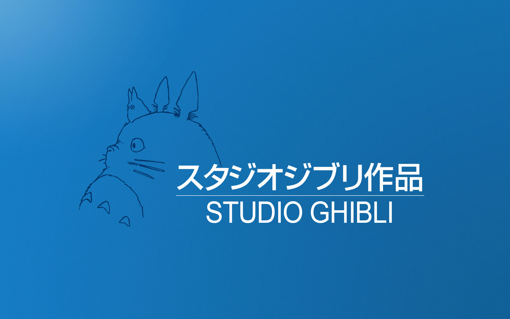
Поклонники японской анимации, безусловно, хорошо знакомы с великолепными работами Studio Ghibli. Она основана в 1983 году Хаяо Миядзаки, сценаристом и режиссером. Первой работой была полнометражная картина «Навсикая из Долины Ветров», вдохновленная Антуаном де Сент-Экзюпери. Миядзаки стремился создать студию, которая будет выпускать качественную японскую анимацию.
Несмотря на огромный риск, Studio Ghibli ждал огромный успех. Среди наиболее известных работ: «Принцесса Мононокэ», «Мой сосед Тоторо», «Унесенные призраками». В последние годы Хаяо Миядзаке все чаще упоминал об уходе из профессии. Его финальной работой стала картина «Ветер крепчает» (2013 год), посвященная самолетам, главной страсти самого Миядзаки.
6. DreamWorks Animation SKG
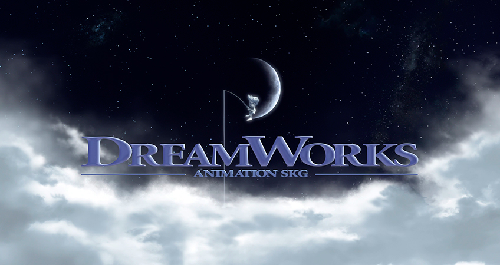
DreamWorks Animation SKG основана в 1994 году. Первые работы студии были исполненные драматизма рисованные картины «Принц Египта», «Дорога на Эльдорадо», «Спирит: душа прерий». Это отличительная черта студии, которую сегодня называют «классикой».
Однако затем философия анимационных картин несколько изменилась, и сценаристы сделали ставку на юмор. Так появились «Шрек», «Кунг-фу панда», «Мегамозг», «Мадагаскар», «Как приручить дракона» и другие популярные картины.
7. Aardman Anomations
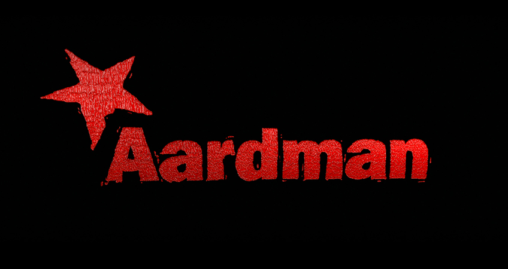
Английская студия Aardman Animations создана в Бристоле в 1972 году. Наиболее примечательными работами, безусловно, являются сериал Ника Парке о приключениях Уоллеса и Громита и «Побег из курятника». Репутация студии строилась годами. Aardman Animations работает в узнаваемом жанре, который невозможно перепутать.
С 2007 по 2014 года студия выпускала занимательный сериал «Барашек Шон». В 2015 году выйдет полнометражная версия, на которую мы советуем обратить пристальное внимание.
8. Rainbow S.r.l.
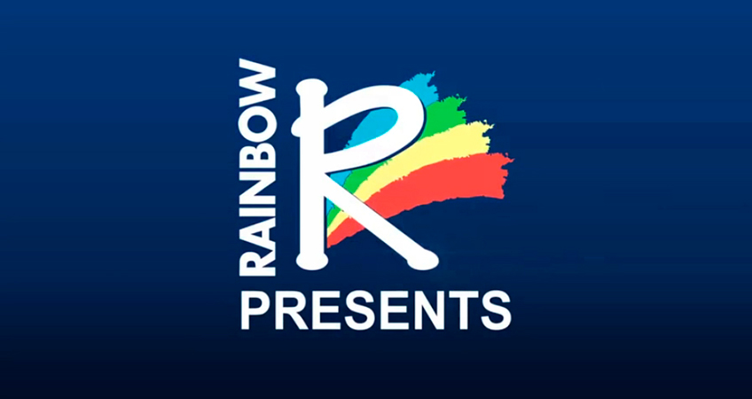
Итальянская студия Rainbow S.r.l. основана в 1995 году. Наибольшую популярность завоевала, благодаря таким мультипликационным сериалам, как «Волшебные Поппикси» и «Winx Club». В России «Клуб Винкс – школа волшебниц» пользуется огромным спросом у девочек младшего возраста, а известность студии Rainbow S.r.l. растет с каждым днем.
9. Студия анимационного кино «Мельница»
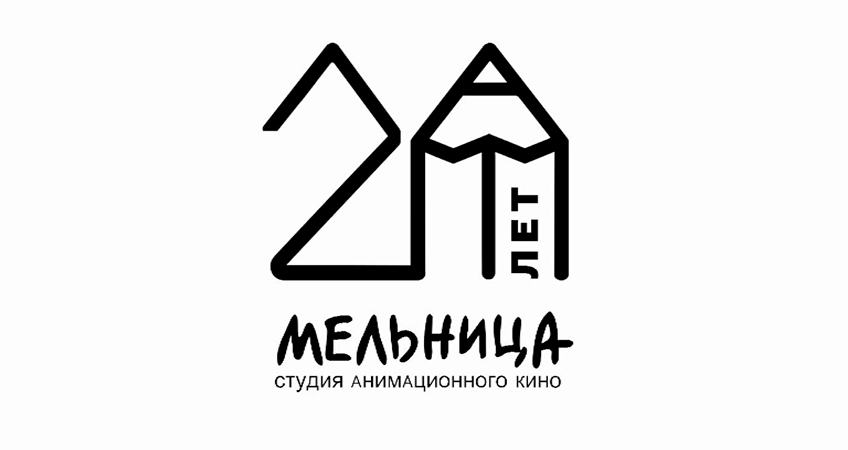
«Мельница» расположена в Санкт-Петербурге. В 1999 году студия была создана Сергеем Сельяновым и Александром Боярским. Первой работой компании стал сериал «Волшебник Изумрудного города», однако наибольшего успеха удалось достичь с выходом мультфильма «Карлик Нос» в 2002 году.
Анимационная лента заработала более 700 000 долларов в российском прокате, что на тот момент было настоящим рекордом. В 2003 году выпущена картина «Алеша Попович и Тугарин Змей», за которой последовали «Добрыня Никитич и Змей Горыныч» и «Илья Муромец и Соловей-Разбойник». Истории о богатырях, пересказанные на современный лад, не только окупились в прокате, но и снискали любовь российского зрителя любого возраста.
10. Blue Sky Studios
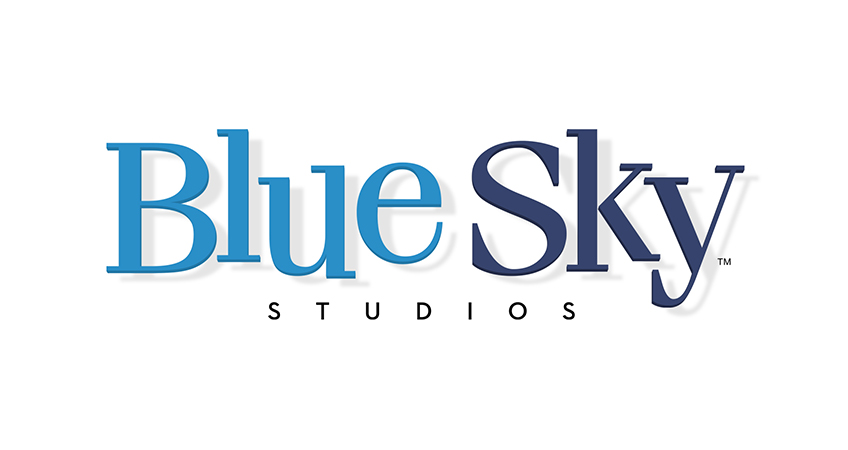
Blue Sky Studios является дочерней компанией 20th Century Fox. Основанная в 1987 году, студия занималась производством рекламных роликов и спецэффектов для кино. Однако в 1997 году ее выкупила компания 20th Century Fox и Blue Sky Studios сосредоточилась на создании анимационных картин. Среди наиболее известных стоит отметить «Ледниковый период», «Рио», «Роботы» и «Хортон».